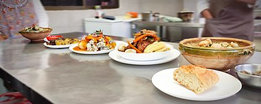

La cocina boliviana se caracteriza por la presencia constante de papa y maíz en muchos de sus platillos. En el país existen 33 variedades de papa registradas y se cultivan 200 mil hectáreas cada año. Se dice que cada boliviano consume entre 90 y 100 kilos de este tubérculo al año. Puede decirse que los tubérculos como la papa, la oca, la papalisa y la yuca fueron domesticados hace miles de años en la región andina y desde entonces forman parte de la base alimenticia de los bolivianos. La papa se consume más en el lado occidental del país y la yuca en el lado oriental,25 pero también en el trópico y en los valles, donde prácticamente cualquier plato se acompaña con estos ingredientes. Otros tubérculos menos conocidos internacionalmente que hacen a la gastronomía boliviana son el yacón (Smallanthus sonchifolius), la racacha (Arracacia xanthorriza), la achira (Canna eduli), la ajipa (Pachirhyzus ahipa) y la papa walusa.
En Bolivia también se consume mucho maíz, el cual se produce prácticamente en todo el territorio nacional. Existen 70 razas bolivianas de maíz,27 llamado choclo localmente, y se usa de muchas maneras, ya sea en comidas o en bebidas (huminta o chicha, por ejemplo). 28Solo en 2017, en el departamento de Santa Cruz se produjeron 350 mil hectáreas de este alimento.
|  |